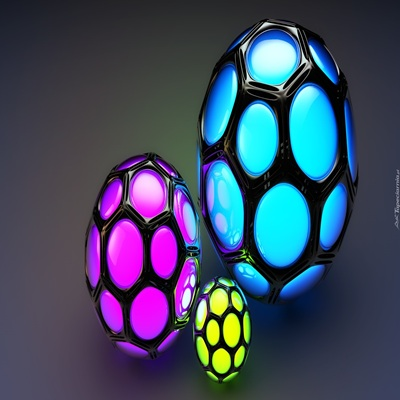
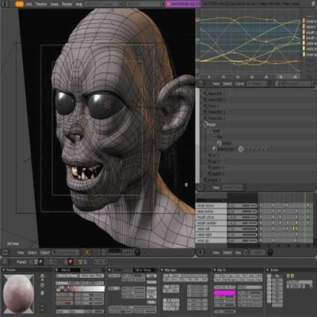
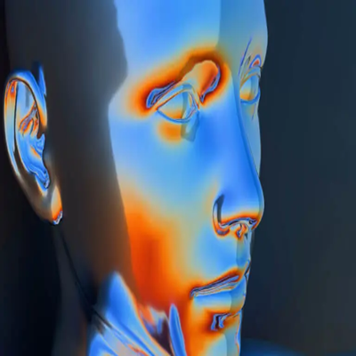

Co to jest grafika 3D?
Grafika 3D to forma grafiki komputerowej, która przedstawia obiekty w trójwymiarowej
przestrzeni – z głębokością, wysokością i szerokością.
Modele 3D są tworzone za pomocą siatek (tzw. mesh), składających się z
punktów (wierzchołków), krawędzi i ścian. Obiekty można obracać, oświetlać i renderować,
by uzyskać realistyczny obraz lub animację.
Zalety:
1. Realistyczne odwzorowanie – można osiągnąć efekt zbliżony do fotografii.
2. Możliwość animacji i interakcji – idealna do filmów, gier i VR.
3. Elastyczność – raz stworzony model można obracać, modyfikować i używać z różnych perspektyw.
4. Zastosowanie w wielu branżach – od medycyny po przemysł.
Wady:
1. Wysokie wymagania sprzętowe – renderowanie może być czasochłonne i obciążać komputer.
2. Skomplikowany proces tworzenia – nauka programów i technik 3D wymaga czasu.
3. Duże pliki – modele, tekstury i animacje zajmują sporo miejsca.
Zastosowanie grafiki 3D
1. Gry komputerowe i animacje
2. Filmy i efekty specjalne (CGI)
3. Architektura i wizualizacje wnętrz
4. Projektowanie produktów i prototypowanie
5. Druk 3D
6. Medycyna (np. wizualizacja organów)
7. VR i AR (wirtualna i rozszerzona rzeczywistość)
Najpopularniejsze programy:
1. Blender – darmowy, bardzo zaawansowany program 3D.
2. Autodesk Maya – profesjonalny program do animacji i modelowania.
3. Autodesk 3ds Max – często używany w grach i architekturze.
4. Cinema 4D – popularny w motion designie.
5. ZBrush – do rzeźbienia i detali modeli organicznych.
6. SketchUp – prosty w obsłudze, często używany w architekturze.
7. Unity / Unreal Engine – silniki do tworzenia gier i interaktywnych aplikacji 3D.
Typowe rozszerzenia plików rastrowych:
1. .obj – uniwersalny format modeli 3D.
2. .fbx – często używany w grach i animacjach (obsługuje także ruch).
3. .blend – natywny format Blendera.
4. .stl – najczęściej używany do druku 3D.
5. .3ds – starszy format z 3ds Max.
6. .dae (Collada) – wymiana danych między różnymi programami.
6. .gltf / .glb – nowoczesny format do internetu i aplikacji interaktywnych.


